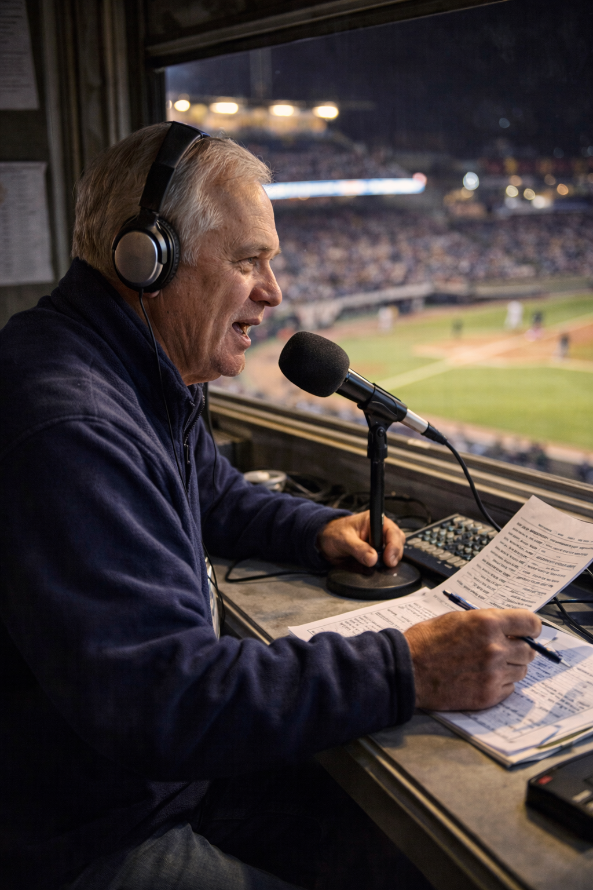

St. Paul Frost
Americas DivisionThe Club
St. Paul doesn’t sell a myth or a “style of play.” It records what happens: breath in the dugout, late shadows on the infield, and the small pauses between pitches when the whole park seems to listen. The Frost feel local—built for cold nights, bright lights, and the kind of crowd that stays attentive all nine.
Ballpark

Rimefield Park. A river-adjacent stadium with wide concourses and hard, clean sightlines. When the sun drops, the lights come on fast—and the field turns crisp. You can hear a bat crack from anywhere.
Broadcast & Announcers

June Halvorsen
Play-by-play. Clear, measured calls with just enough warmth to make it feel like you’re already there. Halvorsen lets the crowd noise breathe, then lands the moment when it matters.

Pat “Northbound” Keane
In-stadium announcer. A steady baritone that cuts clean through the upper deck. Lineups, counts, promotions—kept tight, never corny, always audible.
Mascot & Stands

Rime
A human-worn costume with visible seams, a little scuff, and an old-pro confidence. Rime works the aisles—high-fives at the rail, photos in the concourse, and quick waves to kids who spot him first.

The Ice Rail
Gloves on, hats low, and a lot of quiet focus between big moments. When the count runs full, people stand without thinking. The cheer is sharp—then it’s back to watching.